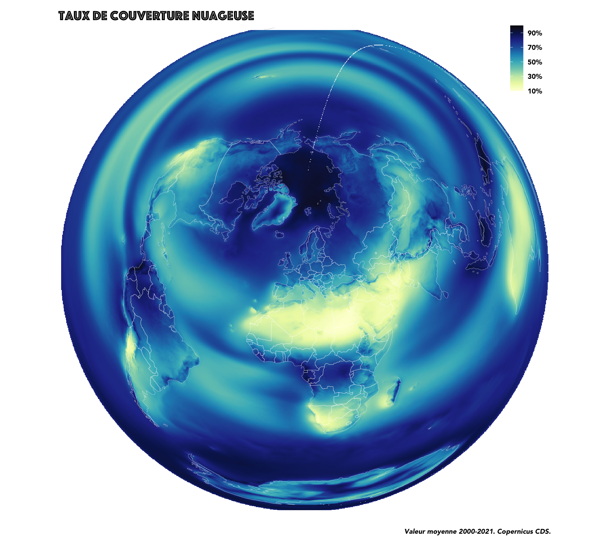
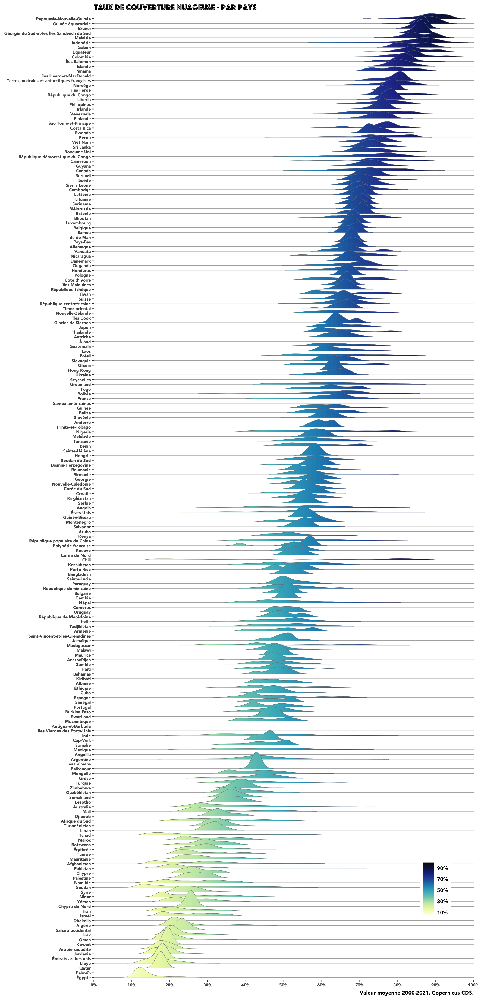
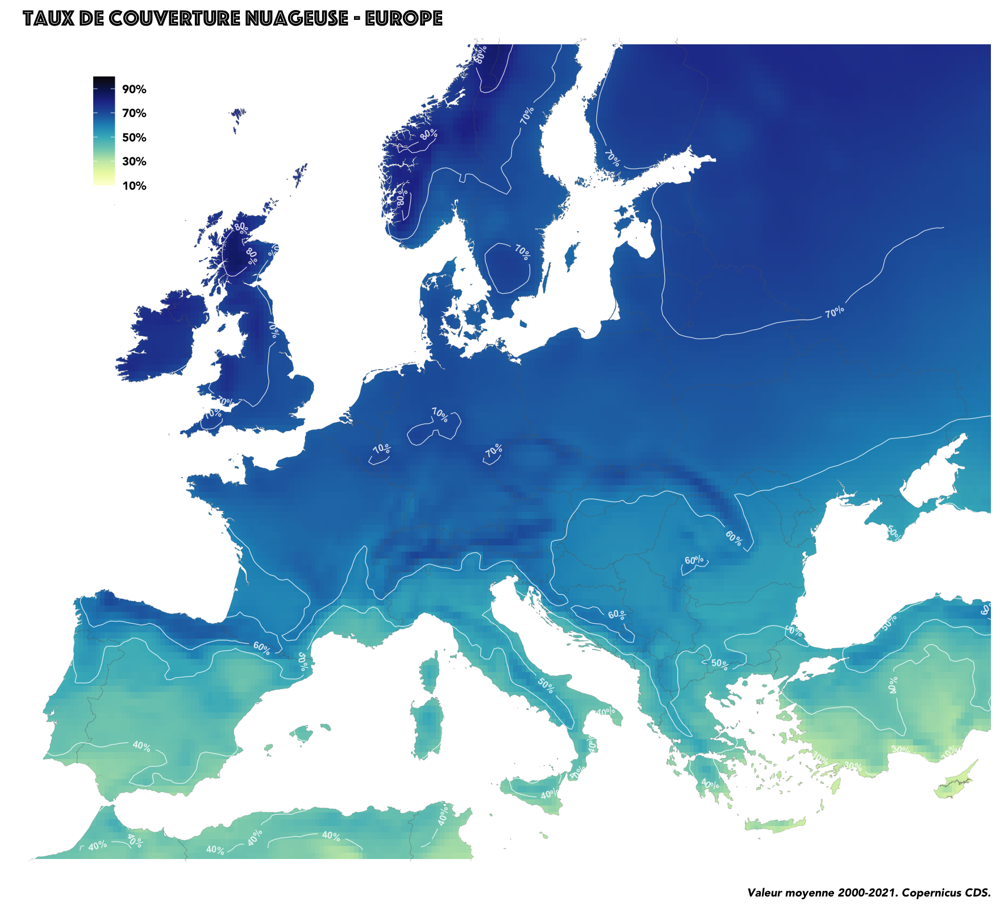
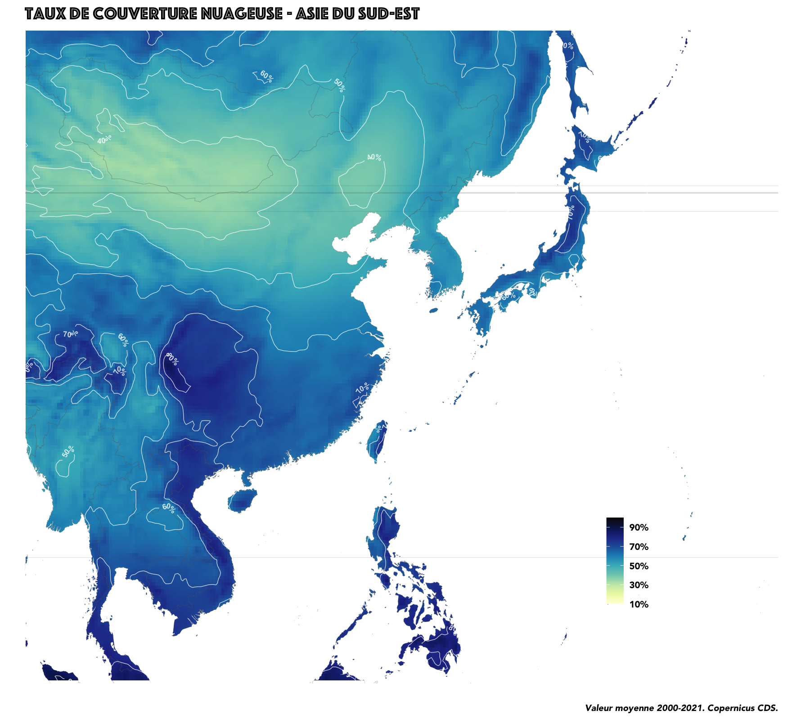

Copernicus, le programme d’observation de la Terre de l’UE basé notamment sur ses satellites, met a disposition du grand public un ‘climate data store’ fournissant une quantité folles de données météo. Ce sont par exemple ces données qui ont été utilisées pour cette jolie carte bivariée pour visualiser les zones où quand il pleut, ça tombe dru.
Pour revoir les bases de l’ensoleillement sur la planète, on va ici l’approcher par son contraire : la nébulosité. On s’intéresse au taux de couverture nuageuse, soit la part du carreau recouvert de nuages à chaque heure, le tout moyenné entre 2000 et 2021, avec une résolution spatiale d’1/4 de degré en latitude et longitude, soit environ 28 km au niveau de l’Equateur. Des détails sur le code en bas de page.
Les lignes de crête ci-dessous montrent la dispersion du territoire de chacun des pays selon leur taux de couverture nuageuse, classés selon le taux moyen par pays.
Les pays situés au niveau de l’équateur arrivent en tête avec 90% en moyenne, notamment la Papouasie-Nouvelle Guinée, la Guinée-Equatoriale ou le sultanat de Brunei.
L’Inde, Madagascar mais surtout le Chili ont des différences de nébulosité de grande amplitude au sein même de leur territoire.

Le Moyen-Orient et l’Afrique du Nord placent leurs représentants parmi les pays les plus ensoleillés : l’Egypte, Bahrein et le Qatar.
Avec une analyse sur les grandes villes, on sera peut-être surpris de trouver les cités colombiennes aussi hautes dans le classement, devant Yaoundé, Singapour mais surtout devant Manchester, pourtant pas réputé pour son soleil radieux.

Isoplèthes par continent
Quelques cartes plus locales pour voir que l’Europe et son climat tempéré possède sûrement les disparités de nébulosité les plus faibles.





Méthodo
L’intégralité des traitements est comme d’habitude dans le code-source de la page. On peut citer une partie des libraires très cools utilisées ici, merci à leurs développeurs :
ecmwfr pour récupérer les données du Climate Data Store de Copernicus
geomtextpath pour tracer les isolignes
ggridges pour les graphiques en ‘lignes de crêtes’
qgisprocess pour appeler des fonctions QGis
rnaturalearth pour télécharger les données du projet Natural Earth